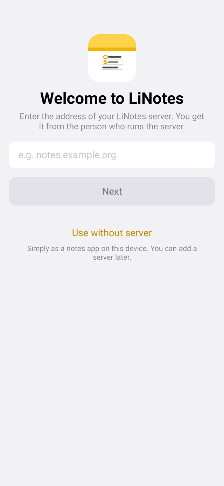
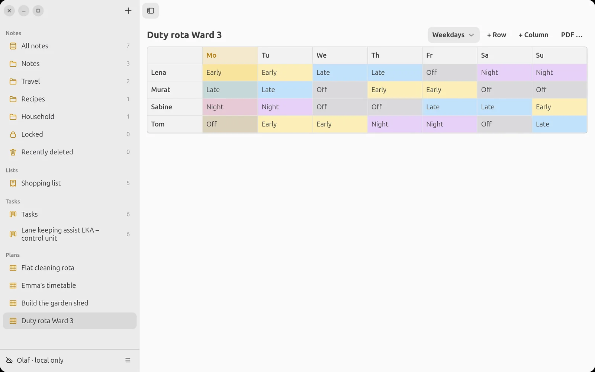
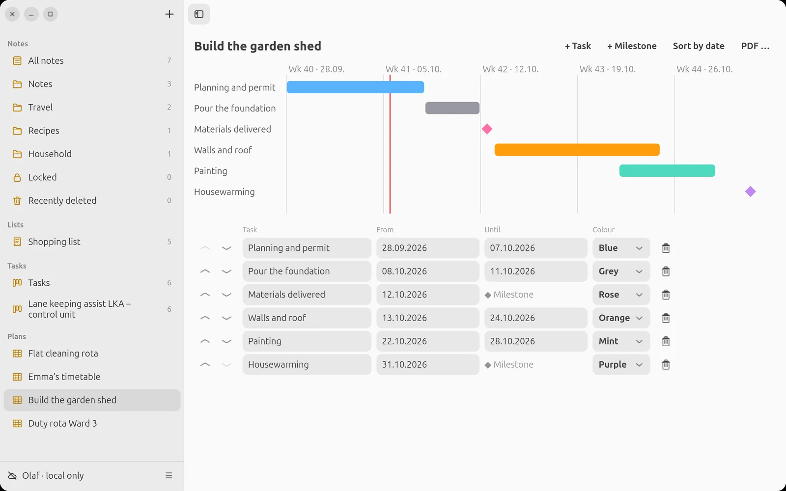

LiNotes
LiNotesHelp
Every feature, step by step. Ubuntu and Android show where things differ.
With or without a server
On first launch LiNotes asks for the address of your server. You get it from the person who runs the server, or you set one up yourself.
No server? Tap “Use without server”. LiNotes is then a notes app where everything is stored encrypted on this device only. Later you can add a server under Settings → “Connect to server …” Ubuntu account menu. Your notes are then uploaded.

Account and key file
- Create an accountEnter the server address, choose “Create new account”, then the invitation code, a user name (lower case, no spaces) and your name. There is no password: your account is protected by a key that lives only on your devices.
- Back up the key fileSettings → “Back up key file …” Ubuntu account menu. Choose a passphrase and keep the file, e.g. on a USB stick. If you lose all your devices, this is the only way back to your notes. Nobody else can restore them. LiNotes reminds you after a few days.
Connect another device
- On the new deviceEnter the server address and choose “Connect with another device”, then your user name.
- Confirm the codeThe new device shows a 6-digit code and a QR code. On a device where you are already signed in, “Connect new device?” appears, type in or scan the code there. If it was not you: “Decline”.
New note
Android Pencil icon at the top right or at the bottom of the note. Ubuntu Pencil icon in the toolbar or Ctrl+N.
Quick note from anywhere: Android Add the “New note” tile in Quick Settings (swipe down from the top). Ubuntu linotes --neue-notiz opens a new note right away, e.g. as a custom keyboard shortcut in the Ubuntu settings.
The first line automatically becomes the title. A new note you write nothing in disappears by itself when you leave it, just like on Apple devices.
Formatting

Via “Aa” you choose Title, Heading, Subheading, Body, Monospaced, Bulleted list, Dashed list, Numbered list and Quote. Bold, italic, underline and strikethrough are in the same menu.
Indent: Tab / Shift+Tab Ubuntu or via “Aa” Android. A divider appears when you type --- on an empty line and press Enter.
Checklists
Checklist icon in the toolbar, then simply write items. Tap the circle to tick an item off. An empty line ends the list. Via “More”, ticked items can be sorted to the bottom automatically.
Highlighting, text colour, font, alignment
Select text and highlight it via “Aa”: in yellow, orange, pink, purple, mint or blue. In the same menu: text colour, font and alignment (left, centred, right). Ubuntu Yellow highlighting also works with Ctrl+Alt+H.
Tables


Insert: table icon in the toolbar. You get a table with 3 × 3 cells.
Ubuntu Write directly in the cells. Tab jumps to the next cell; in the last cell a new row appears. Enter and the arrow keys change the row. Right-click a cell: insert a row above/below or a column left/right, delete a row or column, delete the table.
Android The table opens in the table editor. “Next” on the keyboard jumps to the next cell. At the bottom you insert or delete rows and columns next to the selected cell. Tap the table in the note to edit it again.
Calculating

Write a calculation with an = at the end of the line. LiNotes adds the result. Multiplication comes before addition, brackets work, decimals use a comma (German style for now). A label in front does no harm: Fixkosten: 850 + 74 + 35 = gives 959.
Photos, files, PDFs

Android Photo icon → “Take photo”, “Choose from photos” or “Attach file …”. Ubuntu Photo icon or paper clip, or simply drag files into the note.
Attachments are encrypted like everything else. PDFs show a preview of the first page; tapping opens the file with the matching app.
Recording audio
Tap the microphone icon in the toolbar. Recording starts immediately, the time runs along. “Done” puts it in the note, “Cancel” discards it. The first time, Android asks for microphone permission.
The recording appears as a voice message like in Apple’s Messages: a coloured bubble with play button, waveform and duration. Tapping plays it right in the note, tapping again pauses. A tap on the waveform jumps to that spot; the time counts down. Recordings from the phone can be played on the computer and vice versa.
Tapping or clicking an image in the note opens it large in Quick Look.

Collapse Sections

Headings and subheadings with content below them have an arrow on the left. Tapping it collapses everything up to the next heading of the same level. The state is saved with the note and applies on all devices. The PDF always shows everything.
Linking Notes
Type >>. A selection of your notes appears; keep typing to filter. Ubuntu Also with Ctrl+K. The link always shows the current title, even if you rename the linked note. Tapping opens it.
Web addresses in notes are tappable automatically.
Templates
Ubuntu “+” above the sidebar → “New note from template …”. Android In a folder “…” → “New note from template …”. Included are meeting, minutes, travel checklist and diary.
Your own template: create a note and Ubuntu right-click or Android long-press → “Use as template”. Placeholders are replaced on creation: {{Datum}} (date), {{Uhrzeit}} (time), {{Wochentag}} (weekday). “Meeting {{Datum}}” becomes e.g. “Meeting 04.10.2026”.
Link preview
If a web address stands alone on a line, after Enter it becomes a preview with title, image and domain, just like on Apple devices. By default this is off: Ubuntu view menu (⋯) → “Link preview (fetch web page)”, Android Settings → “Link preview”.
Privacy as with Signal: only the device on which you paste the link fetches the page. The site operator sees your connection’s address, nothing else. The preview including the image is stored encrypted in the note; other devices fetch nothing. Locked notes get no preview.
Clicking the preview opens the page. Ubuntu Right-click → “Show as address only”. Android tap → “Open in browser” or “Show as address only”.
Pro features
By default LiNotes only shows what you need in everyday life. If you want more, switch on the Pro features: Ubuntu view menu (⋯) → “Pro features”, Android Settings → “Pro features”. The switch applies to your account on all devices.
Code with syntax colours: in the format menu choose “Code” and the language (Python, Kotlin, Shell, JSON). Keywords, strings, comments and numbers are coloured, in the PDF too. An empty code paragraph plus Enter ends the block. Notes with code are always shown in colour, even when the pro features are off.
Footnotes and sources: in the format menu “Footnote / source…”. A superscript number appears at the cursor, the text goes into the “Footnotes and sources” list at the bottom (that is how a bibliography comes about) and at the end of the PDF. The numbers count themselves. Click or tap a number to change the text or remove the footnote.
Formulas (LaTeX): in the format menu “Formula (LaTeX) …”: formulas in LaTeX notation, e.g. \frac{a}{b}, x^2, \sqrt{x}, \alpha, \sum_{i=1}^{n}, \int_0^1, matrices (\begin{pmatrix} … \end{pmatrix}) and case distinctions (cases). LiNotes typesets them itself, without internet, in the note and in the PDF. Click or tap a formula to change it; anything LiNotes does not know is marked in red. Older LiNotes versions show the LaTeX text.
@-mentions
In shared notes, type @ at the start of a word. The people the note is shared with appear. The person mentioned gets a notification “… mentioned you”; tapping it opens the note.
Seeing changes by others
If someone has changed a shared note since you last looked at it, a dot appears in front of the title in the list. In the note, a line shows who changed it and when, and the changed lines are highlighted in colour. If someone changes the note while you have it open, the marking appears immediately.
Folders, sorting, gallery, pinning


- Folders and subfolders: Android folder icon at the top right. Ubuntu “+” above the sidebar. Folders can be nested as deeply as you like.
- Moving: drag notes, lists, boards and plans onto a folder, Android press, hold and drag, Ubuntu with the mouse. Or long-press / right-click → “Move to …”.
- Sorting: menu “…” → date edited, date created or title. Applies on all devices.
- Gallery: menu “…” → “Show as gallery” Ubuntu or Ctrl+2.
- Pinning: long-press / right-click a note → “Pin”. Pinned notes stay at the top.
Search and tags
The search field above the list searches all notes. Write #word in a note. The tag appears in the overview for filtering.
Locked Notes
In the note, “More” → “Lock note” Ubuntu lock icon. The first time you set a notes password. The title stays visible, the content is encrypted additionally. On the phone you can switch on unlocking with fingerprint, PIN or pattern (Settings → Locked notes).
Unlocked notes lock again after a few minutes without use and when you leave the app. Immediately: lock icon in the note or “Lock unlocked notes now”. Shared notes cannot be locked.
PDF and Printing
Android In the note, “More” → “Send as PDF …” or “Print …”. Ubuntu Right-click the note → “Export as PDF …” (Ctrl+Shift+E) or “Print …” (Ctrl+P). The PDF looks like the note, with headings, lists, tables and photos.
Recently deleted
Deleted notes stay in “Recently deleted” for 30 days and can be restored there.
Lists


Type entries at the bottom. They land in the matching product group automatically. Pasting several lines creates several entries. Tick items off with the circle; “Delete completed” tidies up. A counter on the “Lists” tab shows what others have added.
Task boards


Create a new card with “Add card …” under a column. Tap a card for due date, assignee, priority, colour and notes. Ubuntu Drag cards with the mouse to another column. Android Long-press a card → choose a column. Columns can be renamed, added and deleted.
Report: Android long-press the board → “Share report (PDF)”. Ubuntu Export icon (box with arrow) at the top of the board or right-click → “Export report …” (PDF or CSV). Inviting people: the people icon next to it.
Development projects

Long-press / right-click the board → “Run as development project”. The cards then show their short ID for quoting in commits and reports, and the card dialog additionally has:
- Impact analysis: what is affected, which risks, what must be checked as well.
- Verification: tests and checks, plus evidence as files: test reports, screenshots, measurement data. It is stored encrypted on the card, with time, person and checksum (SHA-256). So you can later prove it was exactly this report.
- Implemented in version and the linked commits (automatically if the card ID is in the commit message).
- History: who moved the card into which column, and when.

The report then contains a traceability matrix (card ↔ commits ↔ verification ↔ version ↔ acceptance) and a detail page for every card, with all evidence including checksums, images embedded directly.

The pictures show a fictitious example: the automotive project “Spurhalteassistent LKA – Steuergerät” (lane keeping assist control unit) with the columns CR, Analysis, Implementation, Verification and Released.
Detailed examples: ASIL D project according to ISO 26262 and Automotive SPICE · Developing software with AI.
Plans


New plan: Android “Plans” tab → “+”. Ubuntu “+” above the sidebar → “New plan …”. Choose a template: empty plan, timetable, shift plan, cleaning rota, OR/room plan or project plan.
Editing the grid: Ubuntu Write directly in the cells, right-click for colour, rows and columns. Android Tap a cell for text and colour; tap row and column headers to rename, insert and delete.
Column type (menu “…” or the selection at the top): free columns, weekdays, single days from a date or calendar weeks from this week. Today’s column is highlighted.
PDF: “PDF …” Ubuntu or “…” → “Share as PDF …” Android, in landscape for putting up on the wall.
Rotation


For cleaning and duty rotas with “Weeks” columns: choose “Rotation …” and enter the names separated by commas. Every week each name moves on one row. Names from the rotation are shown in italics. An entry of your own in a cell (e.g. “Ben (holiday)”) only applies there.
Timeline (project plan)


Tasks appear as bars, milestones as diamonds, the red line is today. Ubuntu “+ Task” and “+ Milestone” at the top; change name, from, to and colour in the list below. Android “+” at the top right or “Add task” below the list; tap a task to edit or delete it. Dates in the format DD.MM.YYYY.
Agile working
Boards in LiNotes are well suited to agile working. The basis is the Manifesto for Agile Software Development (2001), here in full:
Manifesto for Agile Software Development
We are uncovering better ways of developing software by doing it and helping others do it. Through this work we have come to value:
Individuals and interactions over processes and tools
Working software over comprehensive documentation
Customer collaboration over contract negotiation
Responding to change over following a planThat is, while there is value in the items on the right, we value the items on the left more.
Kent Beck, Mike Beedle, Arie van Bennekum, Alistair Cockburn, Ward Cunningham, Martin Fowler, James Grenning, Jim Highsmith, Andrew Hunt, Ron Jeffries, Jon Kern, Brian Marick, Robert C. Martin, Steve Mellor, Ken Schwaber, Jeff Sutherland, Dave Thomas
© 2001, the above authors
this declaration may be freely copied in any form,
but only in its entirety through this notice.
Source: agilemanifesto.org
The twelve principles, in brief
- Deliver something useful early and regularly. That satisfies customers best.
- Changing requirements are welcome, even late.
- Deliver working results at short intervals, weeks rather than months.
- Business people and developers work together daily.
- Build projects around motivated people, give them the environment, support and trust.
- Face-to-face conversation is the best way to inform.
- Progress is measured by what works.
- Keep a pace everyone can sustain indefinitely.
- Technical excellence and good design make you agile.
- Simplicity: maximising the amount of work not done.
- Good solutions come from self-organising teams.
- Pause regularly, improve together and adjust the approach.
Summarised in our own words; original wording: agilemanifesto.org/principles.html
Working agile with LiNotes
A board shows the flow of work at a glance: columns like “Open – In progress – Done”, each card a small, self-contained piece of work. This is how the four values fit in:
- Individuals and interactions: share boards, assign cards and bring people into the conversation with @-mentions. LiNotes supports the conversation but does not replace it.
- Working software: cut cards small and only move them to “Done” when it really works; in development projects, evidence proves it.
- Customer collaboration: invite the client to the board. They write wishes as cards and accept them themselves, for example with the rule that only they move cards to “Done”.
- Responding to change: change priorities and reorder cards at any time; plans show moved milestones openly instead of hiding them.
Reflect regularly: create the report as a PDF and go through it together. What went well, what do we change? Documentation only as much as needed: impact analysis, verification and evidence are meant for projects that need them (e.g. under ISO 26262 or Automotive SPICE). Simple boards stay lean.
Verifying people
Before you share anything, you verify each other once: Settings → “People” → tap the person Ubuntu account menu → People → “Verify”. Your device shows a code; a request appears on the other person’s device, type in the code there or scan the QR code. That way nobody, not even the server, can slip you a false key.
Sharing
Long-press / right-click a note, folder, list, board or plan → “Share…” and choose people. A shared folder shares everything in it. If you remove someone, the share gets a new key. Your content is re-encrypted right away, other people’s content the next time its owners sync. Until then only the people who remain can read it. You can recognize shared items by the people icon.
Space on the phone
Settings → “Keep notes” sets how long the content of a note stays on the phone after it was last used (always, 90, 30, 7 days or only on the server). Per note: “More” → “Keep on device”. After that, the note is loaded encrypted when opened. Pinned notes, lists and boards always stay on the device.
What the server knows
Everything (notes, lists, boards, plans, folder names, images and recordings) is encrypted on your device before it reaches the server. The server only sees that there are entries, how big they are and when they were changed, not what is in them. The apps contain no ads and no trackers.
Text size, justified text, hyphenation
Android Settings → Appearance: text size, justified text and hyphenation (following the phone’s language). Titles and headings stay ragged right.
Ubuntu Menu “…” next to list/gallery: text size (or Ctrl++ / Ctrl+− / Ctrl+0) and justified text. There is no hyphenation on Ubuntu.
Everything applies per device: large and justified on the phone, compact on the laptop.

Note in its own window Ubuntu
Double-click a note in the list, right-click → “Open in its own window” or Ctrl+O. Changes sync in both directions immediately. Ctrl+W closes the note window.
Keyboard shortcuts Ubuntu
All shortcuts with a search field: Ctrl+? or F1. The most important ones:
- Ctrl+N new note · Ctrl+F search · Ctrl+D duplicate
- Ctrl+B / I / U bold, italic, underline · Ctrl+Alt+H highlight
- Ctrl+Shift+T / H / J title, heading, subheading
- Ctrl+Shift+L checklist · Ctrl+Shift+U tick off
- Ctrl+Alt+↑ / ↓ move line · Ctrl+K link to a note
- Ctrl+Shift+D divider · Ctrl+P print · Ctrl+Alt+L lock locked notes
Any questions left? To the home page · Your own server